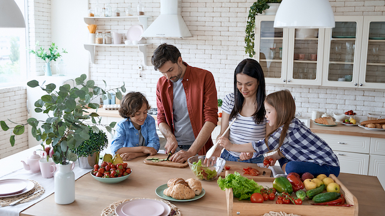

Forbruger
Har du nogensinde følt dig skyldig over at smide mad ud? Eller har du måske set madvarer i dit køleskab, der er gået dårlige, fordi du ikke fik dem brugt i tide? Det er tid til at tage ansvar for vores madspild!
Vi skal alle tage ansvar for vores madspild og bidrage til en mere bæredygtig fremtid. Planlæg dine indkøb, opbevar dine madvarer korrekt, brug dine rester og vær kreativ i dit køkken. Lad os alle gøre en indsats for at mindske vores madspild og bidrage til en bedre verden.